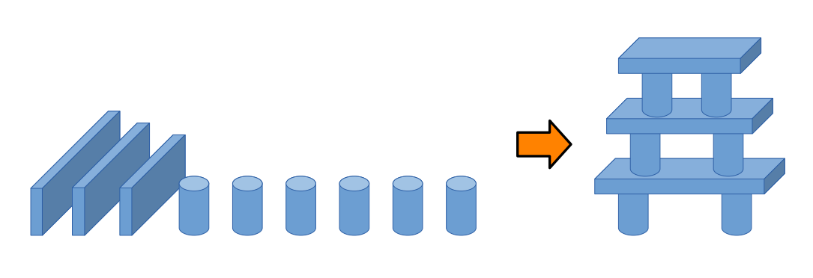

In this project we were tasked with developing a ROS package to operate the WidowX 250s robot arm. the wx250s_teleop ROS package enabled remote control and automation for the 6-DOF robotic manipulator. The package supported multiple modes including Joint, Cartesian, and an automated Build mode for a "shrine" assembly task.

Fig 1.0 — Shrine Construction Illustration